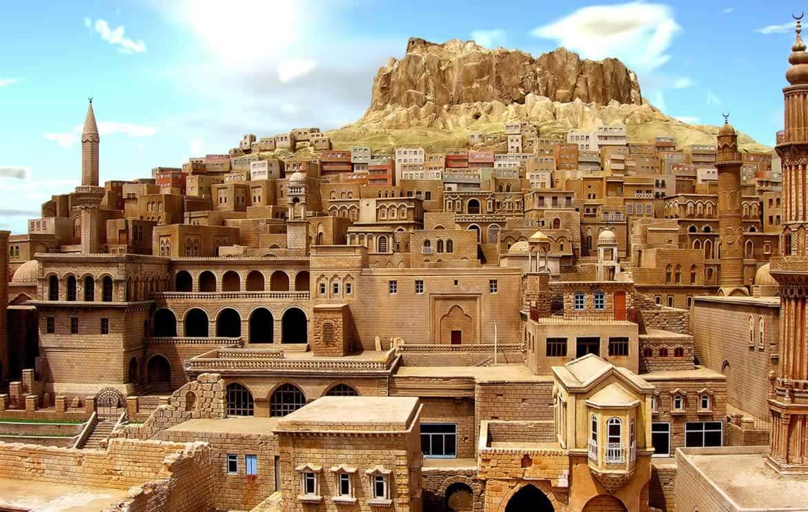

Mardin ilinde tarihin çok eski dönemine uzanan dönemlere ait bulgular yer almaktadır. Artuklu Üniversitesi yerleşkesi içindeki Hırbe Helale yerleşim yerinde yapılan kazılarda ortaya çıkarılan taşlar, Paleolitik Çağ'a tarihlenmiştir.Dargeçit İlçesi Ilısu civarında yer alan Boncuklu Tarla yerleşiminde Cilalı Taş Devrine ait buluntulara rastlanılmıştır. Gene Derik ilçesindeki Kerküşti Höyük’te yapılan kazılar sonucu Kalkolitik Çağ dönemine ait kalıntılar bulunmuştur. Kemaliye höyük ve Tilki tepe Höyüklerinde de Kalkolitik Çağ dönemi seramiklere rastlanmıştır. Nusaybin ilçesindeki Girnavaz Höyük'te Erken Tunç Çağı'na tarihlenen kalıntılara rastlanmıştır. Bunun yanı sıra ildeki 36 höyükte Tunç Çağı' nın çeşitli dönemlerine tarihlenen buluntulara rastlanılmıştır. Mardin-Nusaybin yolu üzerindeki Gırharrin Höyük, Mardin Dağlarının güneyindeki Girnavaz ve Yukarı Dicle havzasındaki Giricano, Kavusan Höyük, Siirt Türbe Höyük, Üçtepe, Ziyarettepe ve Gre Dimse höyüklerinde de bu çağa ait bulgular görülmektedir. Girnavaz höyük, Dargeçit ilçesindeki Zeviya Tivilki höyük ve Kızıltepe-Viranşehir yolu üzerindeki Kerküşti höyük kazılarında Demir Çağı'na tarihlenen kalıntıları bulunmuştur. Nisibis, Midyat, Savur, İzbırak-Zaz, Baskavak-Ahmedi ve Dereiçi (Killit)'de bulunan eski dönem yerleşimlere tarihi kaynaklarda bahsedilmiştir. M.Ö 2000 yılı dolaylarında Asur egemenliğinde olan Mardin ve çevresi daha sonra Hitit ve Urartu egemenliğine geçmiştir. Mardin adı ilk defa 4. yüzyıl Roma tarihçilerinden Ammianus Marcellinus tarafından bahsedilmiştir. I. Justinianus dönemi tarihçisi Prokopius, şehirden Margdis adıyla ikinci derece önemde bir kale olarak bahsetmiştir. Kale, 640 yılında İyâz bin Ganm komutasındaki İslam ordularınca ele geçirildi. Bu dönemde bölgeye yoğun bir Arap nüfusu yerleşimi başladı. Emevî ve Abbâsî döneminde El Cezire valiliğinin toprakları içerisinde yer aldı. 750-751 yıllarında Mardin’e hâkim olan Hariciler’in Harûriyye koluna mensup Benî Rebîa kabilesi reisi Büreyke'nin isyanına sahne oldu. Mardin kalesi, Hamdani hanedanlığının kurucusu Hamdân bin Hamdûn tarafından 885 yılında ele geçirildi. Abbasi Halifesi Mutezid tarafından 894 yılında geri alındı. Daha sonra yeniden Hamdani egemenliğine giren bölge, 10. yüzyılın sonundan 11. yüzyıl sonlarına kadar Mervaniler ile Ukayliler arasında sıklıkla el değiştirdi. 1085 yılında Mardin'in de olduğu bölge Selçuklu egemenliğine geçti. Bu tarihten itibaren bölge yoğun bir Türkmen iskanına sahne oldu. 1103 yılında Artuklu Beyliği hakimiyetine giren Mardin, daha sonra İlgazi Bey liderliğinde kurulan ve yaklaşık üç yüzyıl kadar hüküm süren Mardin Artukluları'nın hakimiyetine geçti. Bu dönemde oldukça gelişen şehir en parlak dönemlerini yaşadı. 1183 yılında Selahaddin Eyyubi şehre ilerlediyse de burayı ele geçiremedi. Ancak 1185'te Mardin Artuklu Beyliği, Eyyubi hâkimiyetini tanıdı. 1198 yılında I. Adil şehri yağmalasa da kaleyi ele geçiremedi. 1203 yılındaki Eyyubi saldırılarına da karşı konulabildi. Daha sonra yapılan antlaşma uyarınca Mardin Artukluları Eyyubiler'e tabi oldu. Mardin Artuklular'ı, I. Alâeddin Keykubad zamanında Anadolu Selçukluları'na tâbi oldu. 1260 yılında İlhanlı hükümdarı Hülagû Han'ın oğlu Yaşmut tarafından sekiz ay kuşatılan Mardin, Mardin hâkimi Necmeddin Gazi Saîd'in oğlu tarafından öldürülmesiyle İlhanlılara teslim oldu. Mardin kalesi, 1366 ve 1383 yıllarındaki Karakoyunlu saldırılarına dayandı. 1394 ve 1401 yıllarında şehir Timur'un kuvvetlerince tahrip edildi. 1409 yılında Mardin Artukluları'nın yıkılmasıyla Mardin, Karakoyunlular'ın kontrolüne geçti. 1432 yılında Mardin kalesi Akkoyunlular'a teslim oldu. 1451 yılında Karakoyunlular kaleyi kuşatsa da, şehri tahrip ederek geri çekildiler. 1507 yılında Şah İsmail tarafından Mardin şehri ve kalesi ele geçirildi. 1515 yılında şehir Osmanlı kuvvetlerine teslim olsa da kale ele geçirilemedi. 1516 yılında yeniden kuşatılan kale, 1517 yılında Osmanlı kuvvetlerince ele geçirildi. Osmanlı döneminde nispeten sakin bir dönem geçiren Mardin, 19. yüzyıldan itibaren karışıklıklara sahne oldu. Osmanlı ile Mısır Hidivliği arasındaki mücadele döneminde Mardin bir süre Milli aşiretine bağlı isyancıların denetiminde kaldı. 1847 ve 1865 yıllarında yaşanan kolera salgınlarında şehirde çokça ölümlere yol açtı. 1891 yılında kapalı çarşısı yandı. 1895 yılında isyancıların saldırısına uğrasa da bu durum kısa sürede bastırıldı. Mondros Mütarekesi'nden sonra İtilaf Devletleri'nin askeri yerleşimi olmadı.
